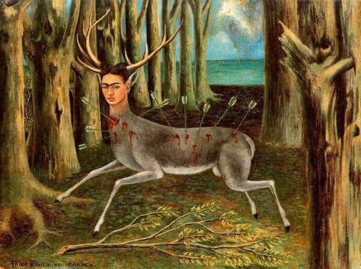
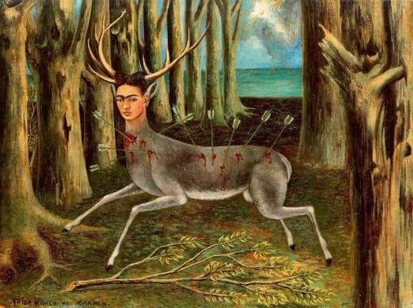

Frida Kahlo
Frida Kahlo nasceu em 6 de julho de 1907, na Cidade do México, e desde jovem enfrentou grandes desafios de saúde. Aos 18 anos, sofreu um grave acidente de ônibus que a deixou com sequelas físicas permanentes e a obrigou a passar por diversas cirurgias ao longo da vida. Durante sua recuperação, ela começou a pintar autorretratos, uma prática que se tornaria sua marca registrada. Sua arte foi profundamente influenciada pela dor física e emocional que sofreu, refletindo suas experiências pessoais, seu amor e sofrimento por Diego Rivera, e suas complexas questões de identidade e pertencimento cultural.
A obra de Frida é caracterizada por cores vibrantes e uma mistura de surrealismo, realismo e elementos do folclore mexicano. Suas pinturas frequentemente abordavam temas como o sofrimento, a morte, a identidade feminina e as questões políticas. Um exemplo marcante é As Duas Fridas (1939), que explora sua luta interna e a dualidade de sua identidade. Frida também incorporou elementos da arte popular mexicana, incluindo o uso de roupas tradicionais e simbolismos que celebravam suas raízes indígenas. Sua arte não só refletia sua dor física, mas também sua resistência e resiliência diante das adversidades.
Apesar de viver à sombra de seu marido, o famoso muralista Diego Rivera, Frida se tornou um ícone cultural por mérito próprio, conquistando reconhecimento póstumo. Ela morreu em 13 de julho de 1954, aos 47 anos, mas deixou um legado duradouro, sendo uma das artistas mais importantes do século XX. Além de sua arte, Frida se tornou um símbolo de empoderamento feminino, com sua imagem de força, autenticidade e independência ressoando profundamente até os dias de hoje.
 
